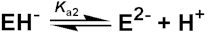

Enzyme Technology
Effect of pH and ionic strength
Enzymes are amphoteric molecules containing a large number of acid and basic
groups, mainly situated on their surface. The charges on these groups will vary,
according to their acid dissociation constants, with the pH of their environment
(Table 1.1). This will effect the total net charge of the enzymes and the
distribution of charge on their exterior surfaces, in addition to the reactivity
of the catalytically active groups. These effects are especially important in
the neighbourhood of the active sites. Taken together, the changes in charges
with pH affect the activity, structural stability and solubility of the enzyme.
Table 1.1. pKas a and heats of ionisation b of the ionising
groups commonly found in enzymes.
Group
|
Usual pKa range
|
Approximate charge at pH 7
|
Heats of
ionisation
(kJ
mole−1)
|
|
Carboxyl (C-terminal, glutamic acid, aspartic acid)
|
3 - 6
|
-1.0
|
± 5
|
|
Ammonio (N-terminal) (lysine)
|
7 - 9
|
+1.0
|
+45
|
|
9 - 11
|
+1.0
|
+45
|
|
Imidazolyl (histidine)
|
5 - 8
|
+0.5
|
+30
|
|
Guanidyl (arginine)
|
11 - 13
|
+1.0
|
+50
|
|
Phenolic (tyrosine)
|
9 - 12
|
0.0
|
+25
|
|
Thiol (cysteine)
|
8 - 11
|
0.0
|
+25
|
a
The pKa (defined as -Log10(Ka)) is the pH at which
half the groups are ionised. Note the similarity between the Ka of an
acid and the Km of an enzyme, which is the substrate concentration at
which half the enzyme molecules have bound substrate. (Back)
b By convention,
the heat (enthalpy) of ionisation is positive when heat is withdrawn from the
surrounding solution (i.e., the reaction is endothermic) by the dissociation of
the hydrogen ions. (Back)
There will be a pH, characteristic of each enzyme, at which the net charge on
the molecule is zero. This is called the isoelectric point (pI), at which the
enzyme generally has minimum solubility in aqueous solutions. In a similar
manner to the effect on enzymes, the charge and charge distribution on the
substrate(s), product(s) and coenzymes (where applicable) will also be affected
by pH changes. Increasing hydrogen ion concentration will, additionally,
increase the successful competition of hydrogen ions for any metal cationic
binding sites on the enzyme, reducing the bound metal cation concentration.
Decreasing hydrogen ion concentration, on the other hand, leads to increasing
hydroxyl ion concentration which compete against the enzymes' ligands for
divalent and trivalent cations causing their conversion to hydroxides and, at
high hydroxyl concentrations, their complete removal from the enzyme. The
temperature also has a marked effect on ionisations, the extent of which depends
on the heats of ionisation of the particular groups concerned (Table
1.1). The
relationship between the change in the pKa and the change in temperature is
given by a derivative of the Gibbs-Helmholtz equation:
(1.12)
where T is the absolute temperature (K), R
is the gas law constant (8.314 J M−1 K−1), DH is the heat of ionisation and the
numeric constant (2.303) is the natural logarithm of 10, as pKa's are based on
logarithms with base 10. This variation is sufficient to shift the pI of enzymes
by up to one unit towards lower pH on increasing the temperature by 50°C.
These charge variations, plus any consequent
structural alterations, may be reflected in changes in the binding of the
substrate, the catalytic efficiency and the amount of active enzyme. Both Vmax
and Km will be affected due to the resultant modifications to the kinetic rate
constants k+1, k-1 and kcat (k+2 in the Michaelis-Menten mechanism), and the
variation in the concentration of active enzyme. The effect of pH on the Vmax of
an enzyme catalysed reaction may be explained using the, generally true,
assumption that only one charged form of the enzyme is optimally catalytic and
therefore the maximum concentration of the enzyme-substrate intermediate cannot
be greater than the concentration of this species. In simple terms, assume EH−
is the only active form of the enzyme,
P" width="310" height="45">
[1.8]
The concentration of EH− is determined by
the two dissociations
[1.9]

[1.10]
with
(1.13)
and
(1.14)
However,
(1.15)
therefore:
(1.16)
As the rate of reaction is given by k+2[EH−S] and this is
maximal when [EH−S] is maximal (i.e., when [EH−S] = [EH−]0):
(1.17)
The Vmax
will be greatest when
(1.18)
therefore:
Ka2)/2" width="164" height="42">
(1.19)
This derivation has involved a
number of simplifications on the real situation; it ignores the effect of the
ionisation of substrates, products and enzyme-substrate complexes and it assumes
EH− is a single ionised species when it may contain a mixture of differently
ionised groups but with identical overall charge, although the process of
binding substrate will tend to fix the required ionic species. It does, however,
produce a variation of maximum rate with pH which gives the commonly encountered
'bell-shaped' curve (Figure 1.4). Where the actual reaction scheme is more
complex, there may be a more complex relationship between Vmax and pH. In
particular, there may be a change in the rate determining step with pH. It
should be recognised that Km may change with pH in an independent manner to the
Vmax as it usually involves other, or additional, ionisable groups. It is clear
that at lower non-saturating substrate concentrations the activity changes with
pH may or may not reflect the changes in Vmax. It should also be noted from the
foregoing discussion that the variation of activity with pH depends on the
reaction direction under consideration. The pHoptimum may well be different in
the forward direction from that shown by the reverse reaction. This is
particularly noticeable when reactions which liberate or utilise protons are
considered (e.g., dehydrogenases) where there may well be greater than 2 pH units
difference between the pHoptimum shown by the rates of forward and reverse
reactions.
Figure 1.4. A generally applicable schematic
diagram of the variation in the rate of an enzyme catalysed reaction (Vmax) with the pH of the solution. The centre (optimum pH) and
breadth of this 'bell-shaped' curve depend upon the acid dissociation constants
of the relevant groups in the enzyme. It should be noted that some enzymes have
pH-activity profiles that show little similarity to this diagram.
The variation of
activity with pH, within a range of 2-3 units each side of the pI, is normally a
reversible process. Extremes of pH will, however, cause a time- and
temperature-dependent, essentially irreversible, denaturation. In alkaline
solution (pH > 8), there may be partial destruction of cystine residues due
to base catalysed b-elimination reactions whereas, in acid solutions (pH <
4), hydrolysis of the labile peptide bonds, sometimes found next to aspartic
acid residues, may occur. The importance of the knowledge concerning the
variation of activity with pH cannot be over-emphasised. However, a number of
other factors may mean that the optimum pH in the Vmax-pH diagram may not be the
pH of choice in a technological process involving enzymes. These include the
variation of solubility of substrate(s) and product(s), changes in the position
of equilibrium for a reaction, suppression of the ionisation of a product to
facilitate its partition and recovery into an organic solvent, and the reduction
in susceptibility to oxidation or microbial contamination. The major such factor
is the effect of pH on enzyme stability. This relationship is further
complicated by the variation in the effect of the pH with both the duration of
the process and the temperature or temperature-time profile. The important
parameter derived from these influences is the productivity of the enzyme (i.e.
how much substrate it is capable of converting to product). The variation of
productivity with pH may be similar to that of the Vmax-pH relationship but
changes in the substrate stream composition and contact time may also make some
contribution. Generally, the variation must be determined under the industrial
process conditions. It is possible to alter the pH-activity profiles of enzymes.
The ionisation of the carboxylic acids involves the separation of the released
groups of opposite charge. This process is encouraged within solutions of higher
polarity and reduced by less polar solutions. Thus, reducing the dielectric
constant of an aqueous solution by the addition of a co-solvent of low polarity
(e.g., dioxan, ethanol), or by immobilisation (see Chapter
3), increases the pKa
of carboxylic acid groups. This method is sometimes useful but not generally
applicable to enzyme catalysed reactions as it may cause a drastic change on an
enzyme's productivity due to denaturation (but see Chapter
7). The pKa of basic
groups are not similarly affected as there is no separation of charges when
basic groups ionise. However, protonated basic groups which are stabilised by
neighbouring negatively charged groups will be stabilised (i.e., have lowered pKa)
by solutions of lower polarity. Changes in the ionic strength (I) of the
solution may also have some effect. The ionic strength is defined as half of the
total sum of the concentration (ci) of every ionic species (i) in the solution
times the square of its charge (zi); i.e.
. I = 0.5S(cizi2).
For example, the ionic
strength of a 0.1 M solution of CaCl2 is 0.5 x (0.1 x 22 +
0.2 x 12) = 0.3 M.
At
higher solution ionic strength, charge separation is encouraged with a
concomitant lowering of the carboxylic acid pKas. These changes, extensive as
they may be, have little effect on the overall charge on the enzyme molecule at
neutral pH and are, therefore, only likely to exert a small influence on the
enzyme's isoelectric point. Chemical derivatisation methods are available for
converting surface charges from positive to negative and vice-versa. It is found
that a single change in charge has little effect on the pH-activity profile,
unless it is at the active site. However if all lysines are converted to
carboxylates (e.g., by reaction with succinic anhydride) or if all the
carboxylates are converted to amines (e.g., by coupling to ethylene diamine by
means of a carbodiimide, see Chapter
3) the profile can be shifted about a pH
unit towards higher or lower pH, respectively. The cause of these shifts is
primarily the stabilisation or destabilisation of the charges at the active site
during the reaction, and the effects are most noticeable at low ionic strength.
Some, more powerful, methods for shifting the pH-activity profile are specific
to immobilised enzymes and described in Chapter 3.
The ionic strength of the
solution is an important parameter affecting enzyme activity. This is especially
noticeable where catalysis depends on the movement of charged molecules relative
to each other. Thus both the binding of charged substrates to enzymes and the
movement of charged groups within the catalytic 'active' site will be influenced
by the ionic composition of the medium. If the rate of the reaction depends upon
the approach of charged moieties the following approximate relationship may
hold,
(1.20)
where k is the actual rate constant, k0
is the rate constant at zero ionic strength, zA and zB
are the electrostatic charges on the reacting species, and I
is the ionic strength of the solution. If the charges are opposite then
there is a decrease in the reaction rate with increasing ionic strength whereas
if the charges are identical, an increase in the reaction rate will occur (e.g.,
the rate controlling step in the catalytic mechanism of chymotrypsin involves
the approach of two positively charged groups, 57histidine+
and 145arginine+ causing a significant increase in kcat
on increasing the ionic strength of the solution). Even if a more complex relationship
between the rate constants and the ionic strength holds, it is clearly important
to control the ionic strength of solutions in parallel with the control of pH.
Home
| Back | Next
This page was established in 2004 and last updated by Martin
Chaplin
on
6 August, 2014
|